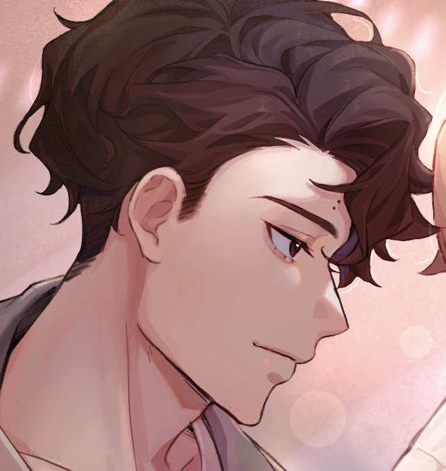
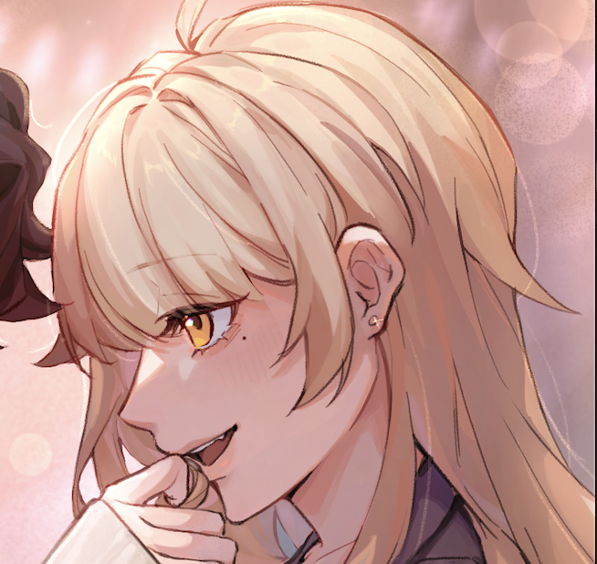

佐久早聖臣
職業排球運動員
身高：192cm
- 性格
- 愛情觀/對森下的想法
是一見鍾情，但一開始自己也沒有明白這是心動的情緒，
對此的形容是有蝴蝶在他的胸腔內躁動不安的撲騰，似乎是想要從自己的口中飛到森下的肩上。
- 曖昧期時的每次約會都會認真規劃，也認真在準備告白。
想要萬無一失的個性，讓籌劃期變得比預想中長，就被森下搶先告白了。
- 經常擔憂森下的生活作息跟健康，交往後決定把對方納入自己的健康管理範圍。
比起叮囑更喜歡直接實際行動，
例：不會耳提命面要照三餐吃飯，但會把森下的下一餐直接買好。
- 是不怎麼說情話的類型，
但喜歡情侶裝、情侶對戒...等等任何可以宣告主權的事物。
- 外貌特徵
- 其他
- 2021東京奧運日本代表成員 OH
- 生日：03/20

森下ベルニ
物理系博士生
身高：152cm
- 性格
- 總結
開朗外向，對情緒感知很鈍感，典型的粗神經
會為了趕研究進度熬夜、通宵，不擅長管理自己的生活作息
- 社交：對外人
自來熟不怕生，遇到來搭訕或推銷的人會看不懂對方的目的&會跟對方永無止盡的聊下去
- 社交：對親友
會刻意調皮，不過對開玩笑的界線把握得很好，不太踩線
對同性朋友喜歡撒嬌跟肢體貼貼
- 缺點
對於聽到不熟悉的事物，如果沒有先搞清楚定義，大腦就會當機（包括但不限於生活常識）
對生活環境不太有要求，不擅長整理跟清掃
- 愛情觀/對佐久早的想法
第一眼就是一見鍾情，對此的形容是「coup de foudre」，直譯為雷擊般的震撼，
那也是靈魂自誕生以來的第一次跳動。
- 曖昧期會跟佐久早在大學校園夜間漫步、分享彼此的生活日常，情商跟觀察力剛好可以看得出對方也是喜歡她的（但又看不出對方在準備告白）
- 交往不久就主動詢問佐久早要不要搬到她的租屋處。對於這件事情沒想太多，也沒有思考過，總之就是問了！
- 覺得愛一個人就是要說出來，同居後經常貼在對方身上告白，不吝嗇感謝跟讚美。
- 講出來的情話大多用天文現象來比喻，有自己的宇宙浪漫。
- 外貌特徵
- 金髮橘眼，左眼下方有淚痣
- 兩邊各有一撮翹起來的頭髮+兩邊耳朵都有耳釘
- 單邊虎牙
- 鬢角一長一短（長的那邊長度到鎖骨以下）
- 右肩跟右大腿內側各有一顆痣
- 其他
- 主要研究領域是太陽物理跟太空電漿模擬
- 生日：10/28